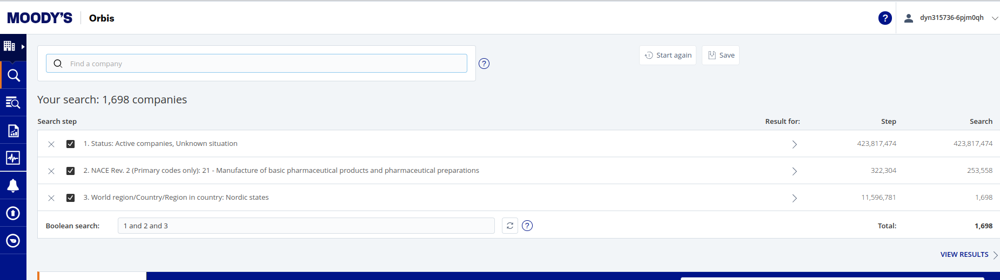
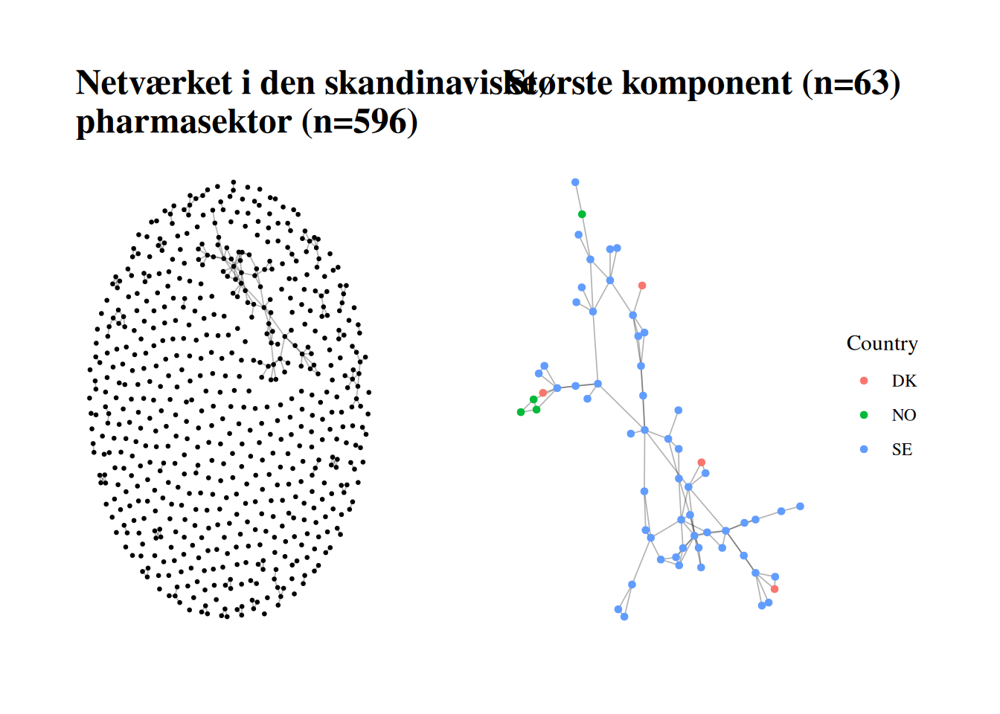
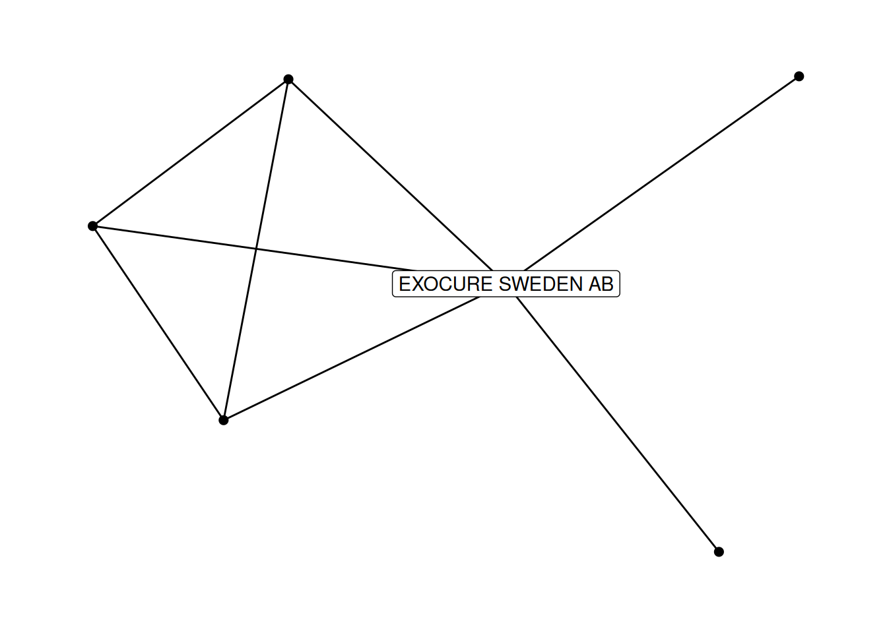
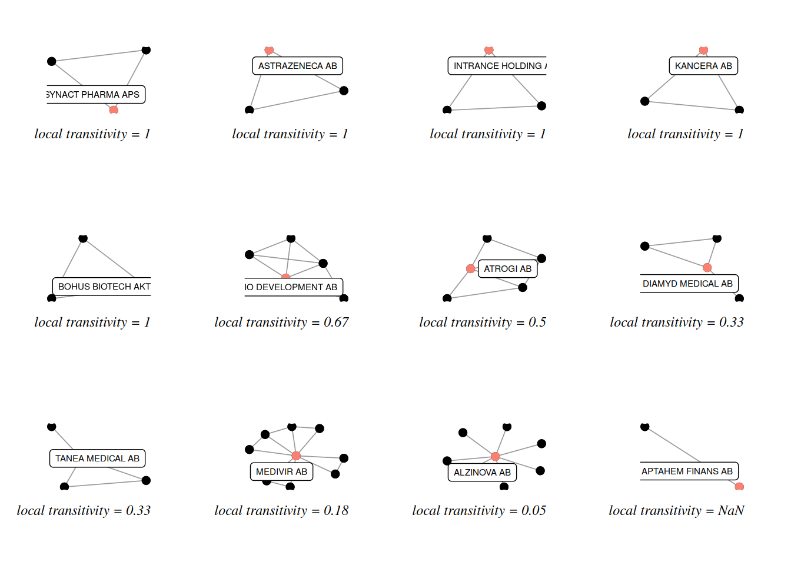

source("functions/networkfunctions.R")
source("functions/custom_functions.R")Analyse af strategiske netværksroller
I denne session bygger vi videre på nogle af koncenterne fra sidst (centralitet se Session3, transitivitet, netværks-lukning og strukturelle huller se Session4)
Først indlæser vi de pakker vi skal bruge:
Som tidligere kan I downloade opdaterede R scripts med hjælpe-funktioner her Download costum_functions.R her
Download networkfunctions.R her
De skal lige ‘sources’ så funktionerne ligger i vores global environment
Data
Til denne session har jeg hentet et datasæt fra Orbis med aktive virksomheder under Activities and industry: Industry classifications = NACE (21 - Manufacture of basic pharmaceutical products and pharmaceutical preparations) og Loation = World region/Country/Region in country: Nordic states

Af ekstra variable har jeg tilvalgt: Director & Managers: Full name, UCI (Unique Contact Identifier), Job title (in English), Job title, Current or previous, Type of role, Board, committee or department, Level of responsibility, Gender, Birth place, Country/ies of nationality, Country
Ownership data (Shareholders): GUO - Name, GUO - BvD ID number, GUO - Country ISO code, DUO - Name, DUO - BvD ID number, DUO - Country ISO code, CSH - Name, CSH - BvD ID number, CSH - Country ISO code, Total assets th USD Last avail. yr.
I kan hente datafilen her:
Indlæs data
New names:
• `` -> `...1`Warning: Unknown or uninitialised column: `assets`.Orbis variable names updated:
DMFull name => name
DMUCI (Unique Contact Identifier) => person_id
DMGender => person_gender
DMCountry => person_country
DMCountry/ies of nationality => person_countries
Company name Latin alphabet => affiliation
Country ISO code => affiliation_country
DMJob title (in English) => role
DMBoard, committee or department => board_type
DMType of role => role_type
DMLevel of responsibility => role_level
DMCurrent or previous => role_status
NACE Rev. 2, core code (4 digits) => sector
Operating revenue (Turnover) th USD Last avail. yr=> revenue
Total assets th USD Last avail. yr => total_assets
Number of employees Last avail. yr => n_employees
CSH - BvD ID number => csh_id
CSH - Name => csh_name
CSH - Country ISO code => csh_country
GUO - BvD ID number => guo_id
GUO - Name => guo_name
GUO - Country ISO code => guo_country
DUO - BvD ID number => duo_id
DUO - Name => duo_name
DUO - Country ISO code => duo_country
New variables added:
person {TRUE/FALSE}Første blik på data:
# A tibble: 6 × 35
name person_id person_gender person_country person_countries affiliation
<chr> <chr> <chr> <chr> <chr> <chr>
1 Mr Helgel… P3347860… M Norway Norway;United S… NOVO NORDI…
2 Mr Helgel… P3347860… M Norway Norway;United S… NOVO NORDI…
3 Mr Jeppe … P0020235… M <NA> Denmark NOVO NORDI…
4 Mr Soeren… P8278287… M Denmark Denmark NOVO NORDI…
5 Mr Soeren… P8278287… M Denmark Denmark NOVO NORDI…
6 Mr Soeren… P8278287… M Denmark Denmark NOVO NORDI…
# ℹ 29 more variables: affiliation_country <chr>, role <chr>, board_type <chr>,
# role_type <chr>, role_level <chr>, role_status <chr>, sector <chr>,
# revenue <dbl>, total_assets <chr>, n_employees <dbl>, csh_id <chr>,
# csh_name <chr>, csh_country <chr>, guo_id <chr>, guo_name <chr>,
# guo_country <chr>, duo_id <chr>, duo_name <chr>, duo_country <chr>,
# Inactive <chr>, Quoted <chr>, Branch <chr>, OwnData <chr>, Woco <chr>,
# `Consolidation code` <chr>, `Last avail. year` <chr>, …Omkodninger
Vi laver en ny variabel, executive, som er TRUE hvise role_type indeholder enten “BoD” eller “ExeB” eller “SenMan” eller “ExeC” ELLER hvis role indeholder forskellige ord, der indikerer executive level:
pharma_nordic <- pharma_nordic %>% mutate(executive = grepl("BoD|ExeB|SenMan|ExeC", role_type) | grepl("Director|directeur|Head of|general|Chief|executive|president|Chairman", role, ignore.case =T))Vi har hentet to forskellige variable på Orbis for personernes geografiske oprindelse: person_country og person_contries. Den første er fødested, den anden er countr(y/ies) of nationality.
Lad os se hvad fødested indeholder:
pharma_nordic %>% count(person_country, sort = TRUE)# A tibble: 38 × 2
person_country n
<chr> <int>
1 <NA> 5781
2 Denmark 878
3 Finland 349
4 Sweden 349
5 Switzerland 281
6 Norway 189
7 Germany 138
8 United States of America 125
9 Italy 113
10 United Kingdom 102
# ℹ 28 more rowsSom I kan se er der mange rækker med NA (missing). Måske kan vi bruge nationalitet til at udfylde nogle rækker:
Lad os se hvad værdien på countries er i de rækker hvor country er NA:
pharma_nordic %>%
filter(is.na(person_country)) %>%
count(person_countries, sort = TRUE) %>%
slice_sample(n = 10) # Vi tager 10 tilfældige rækker# A tibble: 10 × 2
person_countries n
<chr> <int>
1 United Kingdom;United States 9
2 United States;Canada 1
3 Switzerland 5
4 United Kingdom 90
5 Denmark;Norway;Sweden 3
6 Portugal 1
7 Denmark;Norway 16
8 Sweden;Norway 18
9 Netherlands;Sweden 4
10 Finland;United Kingdom 7Lad os lave en geografi-variabel person_gep, hvor vi bruger nationalitet når fødested er NA (der, hvor der er flere adskilt af “;”, lad da tage den første) og ellers bruger fødested (.default= person_country):
pharma_nordic <- pharma_nordic %>%
mutate(person_geo = case_when(is.na(person_country)~
str_extract(person_countries,
"(^.*?(?=;))|(^.*?$)"),
.default = person_country))Nu har vi færre NA’er:
pharma_nordic %>% count(person_geo, sort = TRUE)# A tibble: 54 × 2
person_geo n
<chr> <int>
1 <NA> 2270
2 Sweden 1804
3 Denmark 1214
4 Norway 1007
5 Finland 719
6 Switzerland 286
7 United Kingdom 226
8 Germany 179
9 United States of America 125
10 United States 116
# ℹ 44 more rowsSom I kan se står der både United States og United States of America, lad os også lige omkode det, så United States bliver til United States of America
pharma_nordic <- pharma_nordic %>%
mutate(person_geo = case_when(person_geo == "United States"~"United States of America", .default = person_geo))Filter
Som det sidste trin i data-behandlingen, lad os filtrere så vi kun har rækker, hvor bestyrelsesmedlemmet er en person, hvor rollen er aktiv og hvor vi med vores executive variabel gætter på at det er det højeste ledelsesniveau. Afslutningsvis sørger vi lige for at der ikke er dobbelt roller for samme person i samme virksomhed:
pharma_nordic <- pharma_nordic %>% filter(person == TRUE)
pharma_nordic <- pharma_nordic %>% filter(role_status == "Current")
pharma_nordic <- pharma_nordic %>% filter(executive == TRUE)
pharma_nordic <- pharma_nordic %>% distinct(name, affiliation, .keep_all = TRUE)Fra matricer til netværksobjekter
Først laver vi en sparse bi_adjacency individ x virksomhed-matrice: (..., formula = ~ name + affiliation) giver en biadjacency matrice med name (individer) i rækker og affiliation (virksomheder) i kolonner.
bi_adj <- xtabs(data = pharma_nordic, formula = ~name + affiliation, sparse = T)Når vi har denne matrice er det relaltivt simpelt at slette fx individer, der kun har en bestyrelsespost og dermed ikke binder nogen virksomheder sammen. Rækkesummen (rowSums()) på matricen fortæller os hvor mange poster et individ har:
rs <- rowSums(bi_adj)
table(rs)rs
1 2 3 4
2275 195 52 14 Der er relativt mange, som kun har én post. Lad os slette dem:
which(rs > 1) giver os index numrene for de positioner i vektoren der er større end én (læs: hvilke i rs er > 1). Sætter vi dette udtryk ind på den første plads i de firkantede klammer efter et dataobjekt, x[i , j], hvor førstepladsen refererer til rækker og andenpladsen til kolonner, så ‘fortæller’ vi R at vi gerne vil beholde de rækker, der svarer til at rækkesummen er > 1.
bi_adj <- bi_adj[which(rs > 1), ]Virksomhedsnetværket
Individnetværket
Ved at gange vores biadjacency matrice med sig selv transponeret (t()). Matrix multiplikation %*% kræver at Matrix pakken er indlæst. Den ene vej t(x) %*% x giver relationerne mellem kolonnerne, den anden vej x %*% t(x)giver relationerne mellem rækkerne:
\(bi\_adj^T \times bi\_adj\):
adj_virk <- t(bi_adj) %*% bi_adj\(bi\_adj \times bi\_adj^T\):
adj_ind <- bi_adj %*% t(bi_adj)herfra kan vi vha igraph lave et netværksobjekt, som er undirected og ikke vægtet (derfor bruger vi %>% simplify() til at slette multiple-edges):
net_virk <- graph_from_adjacency_matrix(adjmatrix = adj_virk, mode = "undirected", diag = FALSE) %>% simplify()
net_virkIGRAPH 4fcae8c UN-- 596 266 --
+ attr: name (v/c)
+ edges from 4fcae8c (vertex names):
[1] A/S ORTHANA KEMISK FABRIK--BIOFAC A/S
[2] A/S ORTHANA KEMISK FABRIK--DANIPHARM A/S
[3] A/S ORTHANA KEMISK FABRIK--PHARMADAN A/S
[4] AAS PRODUKSJONSLAB AS --CURIDA AS
[5] AAS PRODUKSJONSLAB AS --CURIDA HOLDING AS
[6] AETAS LABS APS --SUPAR HEALTH APS
[7] AGILERA PHARMA AS --IFE HOLDING AS
[8] AKI THERAPEUTICS A/S --REPOCEUTICALS A/S
+ ... omitted several edgesnet_ind <- graph_from_adjacency_matrix(adjmatrix = adj_ind, mode = "undirected", diag = FALSE) %>% simplify()
net_indIGRAPH ee6bad1 UN-- 261 433 --
+ attr: name (v/c)
+ edges from ee6bad1 (vertex names):
[1] David Lawrence Stern --Dr Henrijette Elisabeth Richter
[2] David Lawrence Stern --Mr Mark Smith
[3] David Lawrence Stern --Mr Nicholas Haft
[4] David Lawrence Stern --Mr Peter Finsel Bisgaard
[5] David Lawrence Stern --Ms Claudia Maria Colciago
[6] David Lawrence Stern --Ms Colleen Denise Acosta
[7] Dr Bert Roland Kari Junno--Mr Jan Nilsson
[8] Dr Bert Roland Kari Junno--Mr Mikael Lindstam
+ ... omitted several edgesKomponenter
med funktionen count_components finder vi ud af hvor mange sammenhægende komponenter netværkene består af, og med en table på components()$csize kan vi se, hvor mange komponenter af forskellig størrelse der er:
count_components(net_virk)[1] 405components(net_virk)$csize %>% table().
1 2 3 4 5 6 7 9 13 63
343 32 15 7 1 2 2 1 1 1 Vi har altså 343 isolerede virksomheder (komponenter med én virksomhed) og 32 par af virksomheder osv. og en stor komponent på 63 virksomheder
count_components(net_ind)[1] 62components(net_ind)$csize %>% table().
1 2 3 4 5 6 7 8 16 77
14 17 15 6 3 1 2 2 1 1 Vi har altså 14 isolerede individer. og 17 par af individer osv. og en stor komponent på 77 invidider.
Største komponenter
med largest_component() fra igraph og get_n_largest_component() fra networkfunction.R kan vi ‘udtrække’ hhv. den største og den n’te component fra netværket og gennem dette subnetværk som et selvstændigt objekt:
comp1_virk <- largest_component(net_virk)
comp2_virk <- get_n_largest_component(net_virk, n = 2)comp1_ind <- largest_component(net_ind)
comp2_ind <- get_n_largest_component(net_ind, n = 2)Tilføj vertex attributes der ikke er beregnet direkte på netværksobjektet.
Som vi har talt om tidligere kan man ikke udenvidere tilføje vertex attributes fra sit datasæt (er de sorteret ens? er der lige mange rækker osv.?). Jeg har skrevet en lille funktion, som ligger i networkfunctions.R vi har sourcet, og derfor er i vores environment. Funktionen hedder: add_vertex_attr(graph = ., data = ., match_var = .). Den skal have et grafobjekt (som vi gerne vil tilføje variable til), et datasæt (som vi gerne vil tilføje variable fra) og navnet på en match variabel som skal være i datasættet og skal svare til name grafobjektet.
for virksomhedsgrafen kommer V(.)$name jo fra affiliation variablen, så den er match_var her. Lad os sige jeg gerne vil tilføje, country, sector, revenue, assets, employees, global ultimate owner (name + country), domestic ultimate owner (name + country) til det fulde netværk og til mine to komponenter
net_virk <- add_vertex_attr(graph = net_virk,
data = pharma_nordic %>%
select(affiliation,
affiliation_country,
sector,
revenue,
total_assets,
n_employees,
guo_name,
guo_country,
duo_name,
duo_country),
match_var = "affiliation")comp1_virk <- add_vertex_attr(graph = comp1_virk,
data = pharma_nordic %>%
select(affiliation,
affiliation_country,
sector,
revenue,
total_assets,
n_employees,
guo_name,
guo_country,
duo_name,
duo_country),
match_var = "affiliation")comp2_virk <- add_vertex_attr(graph = comp2_virk,
data = pharma_nordic %>%
select(affiliation,
affiliation_country,
sector,
revenue,
total_assets,
n_employees,
guo_name,
guo_country,
duo_name,
duo_country),
match_var = "affiliation")for individgrafen kommer V(.)$name jo fra name variablen, så den er match_var her. Lad os sige jeg gerne vil tilføje køn og geografi for individerne:
net_ind <- add_vertex_attr(graph = net_ind,
data = pharma_nordic %>%
select(name,
person_gender,
person_geo),
match_var = "name")
comp1_ind <- add_vertex_attr(graph = comp1_ind,
data = pharma_nordic %>%
select(name,
person_gender,
person_geo),
match_var = "name")
comp2_ind <- add_vertex_attr(graph = comp2_ind,
data = pharma_nordic %>%
select(name,
person_gender,
person_geo),
match_var = "name")Første graf plot
Her fra kører jeg videre med virksomhedsnetværket som eksempel..:
Lad os plotte hele netværket og den største komponent:
Først laver vi et plot af hele netværket (net_virk) og gemmer (<-) det i p, og et af den største komponent (comp1_virk) og gemmer (<-) det i p1. Når patchwork pakken er indlæst kan man ‘sætte’ plots sammen med + hvis de skal være ved siden af hinanden eller / hvis de skal være over hinanden:
p <- net_virk %>% ggraph("fr") +
geom_edge_link0(width = 0.3, alpha = 0.3) +
geom_node_point(size = .5) + ggtitle(paste0("Netværket i den skandinaviske \npharmasektor (n=", vcount(net_virk), ")")) +
theme_graph(base_family = "serif")
p1 <- comp1_virk %>% ggraph("fr") +
geom_edge_link0(width = 0.3, alpha = 0.3) +
geom_node_point(aes(color = affiliation_country), size = 1.2) + ggtitle(paste0("Største komponent (n=", vcount(comp1_virk), ")")) + guides(color = guide_legend("Country")) +
theme_graph(base_family = "serif")
p + p1 
Netværksmål
Som et led i analysen af vores netværk kan vi beregne nogle af de netværksmål på graf-niveau (altså hele netværket) vi har kigget på tidligere:
dens <- edge_density(comp1_virk)
trans <- transitivity(comp1_virk)
radius <- radius(comp1_virk)
diameter <- diameter(comp1_virk)Lad os gemme dem i en med navne i en vector (en named vector). Det gør vi ved at skrive “det navn værdien skal have” = værdien. Sådan en named vector kan laves om til en tibble (dataformat) med enframe, så navne kommer i en kolonne og værdierne i en anden:
net_description <- c("nb. of nodes" = vcount(net_virk),
"nb. of edges" = ecount(net_virk),
"nb. of components" = count_components(net_virk),
"largest component: nb. of nodes" = vcount(comp1_virk),
"largest component: share of nodes" = vcount(comp1_virk) / vcount(net_virk),
"largest component: nb. of edges" = ecount(comp1_virk),
"largest component: share of edges" = ecount(comp1_virk) / ecount(net_virk),
"largest component: diameter" = diameter,
"largest component: radius" = radius,
"largest component: density" = dens,
"largest component: transitivity" = trans) %>% enframe(name = "Measures", value = "value")
head(net_description)# A tibble: 6 × 2
Measures value
<chr> <dbl>
1 nb. of nodes 596
2 nb. of edges 266
3 nb. of components 405
4 largest component: nb. of nodes 63
5 largest component: share of nodes 0.106
6 largest component: nb. of edges 98 Med write_xlsx kan vi gemme tabllen i en excel-fil så tallene er klar til at blive fortolket og brugt i analysen i en pæn tabel. Vi lægger filen i mappen output og kalder den noget, så vi kan finde den igen:
write_xlsx(net_description, path = "output/pharma_nordic_example_net_description.xlsx")Ego-netværk og lokalt strategiske netværkspositioner
Vi har indtil nu (måske lige bortset fra degree centralitet) fokuseret på hele netværksstrukturen og på nodernes position i betragtning af hele netværket.
De mål og ideer vi skal se på ny handler i højere grad om de enkelte aktørers (fx. virksomheder eller individer) direkte netværksrolle. Altså hvilken rolle de spiller i de konkrete direkte relationer de indgår i.
Egonetværk af nabolag.
I stedet for at se på noden fra netværkets perspektiv, kan vi så at sige vende kikkerten og studere netværket ud fra noden. Et ego netværk er den konfiguration, der udspændes af en enkelt nodes direkte forbindelser og disses relation til hinanden. Hvis vi yderligere tager forbindelsernes forbindelser i betragtning, siger vi at et er ego’s 2nd neigbourhood osv. osv.
Lad os tegne et egonetværk for en enkelt virksomhed. make_ego_graph gør netop dette. Men bemærk at den returnere en liste af netværk, fordi man kan give den flere nodes =, så den laver et ego netværk for hver. Hvis vi kun vælger én node, får vi stadig en liste. Derfor er vi nødt til at skrive [[1]] bagefter for at få element 1 ud af listen.
ego <- make_ego_graph(comp1_virk, order = 1, nodes = "EXOCURE SWEDEN AB")[[1]]
ggraph(ego) +
geom_edge_link0() +
geom_node_point(size = 2) +
geom_node_label(aes(filter = {name == "EXOCURE SWEDEN AB"}, label = name)) +
theme_graph()Using "stress" as default layoutWarning in geom_node_label(aes(filter = {: Ignoring unknown parameters:
`label.size`
Lad os tage en virksomhed og udvide netværket til 2., 3. og 4. nabolag. På den måde får vi et billede af det større netværk, men set fra denne virksomheds perspektiv.
ego <- "PILA PHARMA AB"
# Hvad er et ego netværk
pl <- ego_neighborhoods(comp1_virk, 4, ego, labels = FALSE)
ggpubr::ggarrange(plotlist = pl, labels = c("1st neighbourhood", "2nd neighbourhood", "3rd neighbourhood", "4th neighbourhood"))
Vi har talt om trekantslukninger (når A og B og B og C er venner, er der sandsynlighed for at A og C også med tiden bliver det) og om hvordan det skaber closure i et netværk og bidrager til lokal densitet og cohesion - som skaber grundlag for tillid, sammenhold, norm-konformitet osv. Social kapital som gruppe fænomen.
Lad os begynde med at se på hvordan lokal transitivitet ser ud. For hver node i vores netværk kan vi se hvor mange af dens forbindelser der er lukkede (to venner der også kender hinanden) og hvor mange der er åbne (åbne/lukkede kalder vi transitivitet). Lad os tage 12 tilfældige noder (sample() på 12 fra vertex navne) og sortere dem, så den med højest transitivitet kommer først. Bemærk at transitivity() returnerer NaN - not a number - når en node ikke er en del af nogen triplets (så er der hverken faktisk lukkede eller mulige lukkede trekanter at regne på). Hvis vi gerne vil sortere er vi nødt til at erstatte NaN med NA.
random_nodes <- sample(V(comp1_virk)$name, 12)
random_nodes <- transitivity(comp1_virk, type = "local", vids = random_nodes)
random_nodes[is.nan(random_nodes)] <- NA
random_nodes <- sort(random_nodes, decreasing = T, na.last = T)
random_nodes <- names(random_nodes)
pl <- ego_net_plot(graph = comp1_virk, nodes = random_nodes, mode = "transitivity")Loading required package: tidygraph
Attaching package: 'tidygraph'The following object is masked from 'package:igraph':
groupsThe following object is masked from 'package:stats':
filterp <- ggpubr::ggarrange(plotlist = pl)
p
ggsave(plot = p, filename = "output/network closure.pdf", height = 6, width = 10)Med closure følger imidlertid også muligheden for det R. Burt kalder strukturelle huller mellem ellers tætforbundne grupper. Det giver plads til en særlig netværks rolle, nemlig den at have ikke-redundente forbindelser. Altså forbindelser der rækker ud over den lukkede og dermed tæt forbundne gruppe man er en del af - og dermed få adgang til ny viden fx. Social kapital som brobygning.
Constraint eller det modsatte: brokerage
Ronald Burt’s constraint index måler i hvor høj grad en nodes ‘venner’ (direkte forbindelser) også er forbundet til hinanden - danner en lukket gruppe. I en lukket gruppe er man begrænset (constrained) i forhold til adgangen til ‘ny viden’ (tænk ekkokammer) fordi alle ens kontakter også er forbundne. En node der har venner ‘uden for’ sin klike har derfor en lavere constraint og vil oftere være den, der bringer nye ideer/tanker/viden ind i sin klike. Med andre ord, jo mindre “constraint”, desto bedre kan en node fungere som en broker over strukturelle huller i netværket.
En kombination af tre ting påvirker en nodes (ego) constraint:
- c-size: antallet af egos direkte forbindelser (degree)…
- lav degree –> højere constraint
- c-density: antallet af forbindelser mellem egos direkte forbindelser…
- høj densitet –> højere constraint
- c-hierarchy: hvordan er alter-forbindelserne struktureret?
- alter forbindelser samlet omkring en alter (partner/skygge ego) –> høj constraint
funktionen constraint i Igraph beregner Burt’s constraint, som er højere jo mere ‘constrained’ en node er. Dvs. lav constraint = høj brokerage.
Det vil vi ofte gerne ‘vende om’ så det bliver et mål for brokerage evne.
constr <- constraint(comp1_virk)
brokerage <- 1 / constrConstraint og andre centralitetsmål
Lad os beregne et par centralitetsmål, som vi tidligere har kigget på
deg <- degree(comp1_virk)
betw <- betweenness(comp1_virk, normalized = TRUE)
close <- closeness(comp1_virk, normalized = TRUE)
eig <- eigen_centrality(comp1_virk, directed = FALSE)$vector
core <- coreness(comp1_virk)
local_transitivity <- transitivity(comp1_virk, type = "local")og et ‘nyt’, nemlig lokal betweenness. Hvor betweenness almindeligvis optæller parvis korteste stier mellem alle noder i hele netværket og dermed fortæller os hvor stor en anden af disse, der går gennem en given node, er lokal betweenness et mere, ja, lokalt mål. Her beregner vi ‘kun’ stier inden for et givet nabolag omkring en node. Fx. 2. nabolag. Hvor mange korteste stier i egos udvidede netværk, venner og venners venner, går gennem ego. cutoff = bestemmer hvor langt ud vi skal kigge.
local_betw <- betweenness(comp1_virk, cutoff = 2, normalized = TRUE)Lad os samle de nodespecifikke centralitetsmål for den største komponent og gemme dem i en xslx fil.
cent_metrics <- tibble(
name = V(comp1_virk)$name,
degree = deg,
betweenness = betw,
local_betweenness = local_betw,
closeness = close,
eigen = eig,
constraint = constr,
brokerage = 1/ constr,
coreness = core,
local_trans = local_transitivity)
cent_metrics <- cent_metrics %>% mutate(degree_rank = dense_rank(desc(degree)),
betw_rank = dense_rank(desc(betweenness)),
local_betw_rank = dense_rank(desc(local_betweenness)),
closeness_rank = dense_rank(desc(closeness)),
brokerage_rank = dense_rank(desc(brokerage)),
eigen_rank = dense_rank(desc(eigen)),
local_trans_rank = dense_rank(local_trans))
write_xlsx(cent_metrics, "output/pharma_nordic_example_centralitymetrics.xlsx")Inden vi går videre til næste del af denne øvelse gemmer vi lige alle centralitetsmålene som vertex attributes i grafobjektet: Husk I kan bruge add_vertex_attr() funktionen til det.
comp1_virk <- add_vertex_attr(graph= comp1_virk, data = cent_metrics, match_var = "name")I det følgende trækker vi et par eksempler ud og ser hvordan det lokale netværk kan være en constraint eller omvendt åbne muligheder for brokerage:
Lad os udvælge nogle forskellige virksomheder fra brokerage fordelingen: nr 1, 5, 10, 15, 20, 30 fx
Det gør vi fra det dataobjekt med centralitetsmål vi lige har gemt. Først sorterer vi data (arrange()) efter brokerage, dernæst tager vi (filter()) nr. 1, 5, 10, 15, 20, 30 og sørger for at der kun er en række for hver (to individer kan godt have samme værdi og dermed samme rank) distinct(). Tilsidst i vores %>%-række bruger vi funktionen pull() til at tage den variabel vi skal bruge.
brokers <- cent_metrics %>%
arrange(brokerage_rank) %>%
filter(brokerage_rank %in% c(1,5,10,15, 20, 30)) %>%
distinct(brokerage_rank, .keep_all = T) %>%
pull(name)
brokers[1] "ALZINOVA AB" "ANNEXIN PHARMACEUTICALS AB (PUBL)"
[3] "CCRM NORDIC AB (SVB)" "ATROGI AB"
[5] "MENDUS AB" "PROMORE PHARMA AB" nu har vi en vector kaldet brokers med navne på de virksomheder vi gerne vil kigge på.
Jeg har skrevet en plotfunktion ego_net_plot(), som vi har sourcet fra networkfunctions.R. Den returnerer et plot-array med de udvalgte brokeres ego-netværk og nogle værdier:
pl <- ego_net_plot(graph = comp1_virk, nodes = brokers, mode = "constraint")
p <- ggpubr::ggarrange(plotlist = pl, common.legend = T, legend = "none")
ggsave(plot = p, filename = "output/constraint_brokerage.pdf", height = 6, width = 8)Assortativity (assortative mixing) - Homofili i netværk
Et sidste men relateret fænomen til social lukning er spørgsmålet om hvilke mekanismer, der skaber netværkslukning.
Det kan være interessant at vide om noder der er ens på forskellige egenskaber er forbundet med hinanden. For at svare på det spørgsmål kan man udregne det der kaldes et netværks assortativity koefficent, der som en korrelations koefficient kan antage værdier mellem -1 og 1. En høj assortativity koefficient betyder at ensartede noder (på den udvalgte egenskab) i højere grad er forbundne, mens en negativ koefficient (gående mod -1) betyder at der omvendt er tale at forskelligartede noder tendere mod at have forbindelser. En assortatity koefficient på 0 beskriver et netværk, hvor der ingen korrelation (hverken positiv eller negativ) er mellem en bestemt egenskab og tendensen til at danne forbindelser.
Assortativity for kontinuerte variable
Funktion assortativity() bruges til at beregne assortativity for kontinuerte variable:
Vi kan fx beregne assortativity for degree. Altså, tenderer velforbundne noder mod at være forbundne. “Populær tiltrækker populær”.
assortativity(comp1_virk, values = degree(comp1_virk))[1] -0.01553398assortativity_degree(comp1_virk)[1] -0.01553398Det ser ikke umiddelbart sådan ud. Med en værdi på nærmest 0 ser det ikke ud til at degree tiltrækker degree mere end det ikke gør.
I mange tilfælde vil det være interessant at beregne assortativity på netværks-eksterne egenskaber. Vi kunne fx. tage antal ansatte, omsætning og assets: er store virksomheder tilbøjelige til at skabe forbindelser til andre store virksomheder:
først sætter vi lige missing (NA) til 0 på antal ansatte, omsætning og assets:
V(comp1_virk)$n_employees[is.na(V(comp1_virk)$n_employees)] <- 0
V(comp1_virk)$revenue[is.na(V(comp1_virk)$revenue)] <- 0
V(comp1_virk)$total_assets[is.na(V(comp1_virk)$total_assets)] <- 0assortativity(comp1_virk, values = V(comp1_virk)$n_employees)[1] -0.01537136assortativity(comp1_virk, values = V(comp1_virk)$revenue)[1] -0.01108428assortativity(comp1_virk, values = V(comp1_virk)$total_assets)Warning in assortativity_impl(graph, values, values.in, directed, normalized):
NAs introduced by coercion[1] NAHeller ikke den store ‘effekt’ her.
Assortativity for kategorielle variable
funktionen assortativity_nominal() bruges til at beregne netværksassortativity for kategorielle variable
Vi gemte fx virksomhedens nationalitet som en vertex attribute, lad os se om det betyder noget: Her skal man lige huske at variablen skal behandles som en factor for at funktionen virker.
assortativity_nominal(comp1_virk, types = factor(V(comp1_virk)$affiliation_country))[1] 0.3333333Ikke så overraskende er der en høj assortativity her. Hvis I scroller op, kan i måske huske at den største komponent i høj grad var en komponent af svenske virksomheder.
En anden kategoriel variable kunne være Global Ultimate Owner (guo): Selskaber der ikke er en del af en koncern har NA på guo_name variablen, der sætter vi virksomhedens eget navn ind i stedet:
V(comp1_virk)$guo_name[is.na(V(comp1_virk)$guo_name)] <- V(comp1_virk)$name[is.na(V(comp1_virk)$guo_name)]assortativity_nominal(comp1_virk, types = factor(V(comp1_virk)$guo_name))[1] 0.1660473